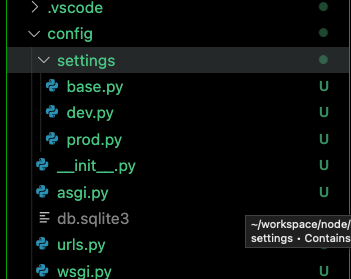
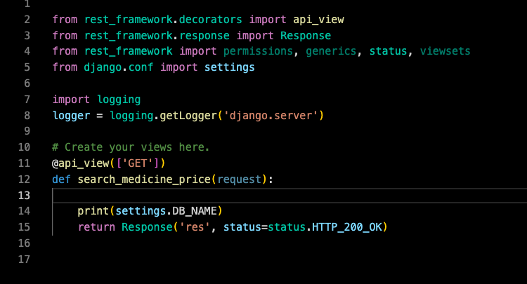

<meta charset="utf-8">
<html lang="ko">
<head>
    <link rel="stylesheet" type="text/css" href="./../style.css" />
    <title>[Django ] env관리를 위한 settings구조 커스텀 - YEOL</title>
</head>
<body id="tt-body-page" class="">
<div id="wrap" class="wrap-right">
    <div id="container">
        <main class="main ">
            <div class="area-main">
                <div class="area-view">
                    <div class="article-header">
                        <div class="inner-article-header">
                            <div class="box-meta">
                                <h2 class="title-article">[Django ] env관리를 위한 settings구조 커스텀 - YEOL</h2>
                                <div class="box-info">
                                    <p class="category">Python/django</p>
                                    <p class="date">2022-08-22 16:13:41</p>
                                </div>
                            </div>
                        </div>
                    </div>
                    <hr>
                    <div class="article-view">
                        <div class="contents_style">
                            <h4 data-ke-size="size20">?<span>&nbsp;</span><b>환경&nbsp;</b></h4>
<p data-ke-size="size16">Mac M1<br />Python 3.9<br />VsCode</p>
<h4 data-ke-size="size20">? <b>개요</b></h4>
<p data-ke-size="size16">Django의 env값을 Prod, Dev에서 쉽게 사용하고 구분하기 위해 settings 구조를 만들어봅시다!</p>
<h4 data-ke-size="size20">?<span>&nbsp;</span><b>목차</b></h4>
<ul style="list-style-type: disc;" data-ke-list-type="disc">
<li>프로젝트를 생성하기</li>
<li>결과 확인하기</li>
</ul>
<p data-ke-size="size16">&nbsp;</p>
<h2 data-ke-size="size26"><b>- 프로젝트 생성하기</b></h2>
<p data-ke-size="size16"><b>django-admin startproject config .&nbsp;</b><br />위의 명령어로 프로젝트를 생성해줍니다. manage.py가 밖으로 빠집니다.<br /><span>그리고 <b>django-admin startapp 앱 이름&nbsp;</b> 명령어로 app을 만들었을 때 구조가 가독성이 좋습니다.</span></p>
<p data-ke-size="size16"><span><b>pip install python-dotenv</b><span>&nbsp;</span>명령어로 env lib를 설치합니다.<br />. env 파일을 manage.py와 동일한 폴더에 생성합니다. 저는 아래와 같이 생성했습니다.<br /></span></p>
<pre id="code_1661150522885" class="typescript" data-ke-language="typescript" data-ke-type="codeblock"><code>#Local DB
DB_NAME_DEV = "yeol_dev"
DB_NAME_PROD = "yeol_prod"</code></pre>
<p data-ke-size="size16">&nbsp;</p>
<p data-ke-size="size16"><span>config폴더 내부를 살펴봅시다. settings.py가 존재합니다. settings 폴더를 만들어주세요.<br />settings.py는 base.py로 이름을 변경하고 폴더 안에 넣어줍니다.<br /></span><span style="font-family: -apple-system, BlinkMacSystemFont, 'Helvetica Neue', 'Apple SD Gothic Neo', Arial, sans-serif; letter-spacing: 0px;">해당 폴더 내에 아래와 같은 prod.py, dev.py를 만들어줍니다.</span></p>
<pre id="code_1660883822752" class="typescript" data-ke-language="typescript" data-ke-type="codeblock"><code>파일명 -&gt; dev.py

from .base import *
from dotenv import load_dotenv
load_dotenv(verbose=True) #.env가 누락일경우 경고메시지 출력하는옵션


DB_NAME = os.environ.get("DB_NAME_DEV")</code></pre>
<pre id="code_1660883810918" class="typescript" data-ke-language="typescript" data-ke-type="codeblock"><code>파일명 -&gt; prod.py

from .base import *
from dotenv import load_dotenv
load_dotenv(verbose=True) #.env가 누락일경우 경고메시지 출력하는옵션


DB_NAME = os.environ.get("DB_NAME_PROD")</code></pre>
<p><figure class="imageblock alignCenter" >
    <span data-lightbox="lightbox">
        
    </span>
    <figcaption></figcaption>
</figure></p>
<p data-ke-size="size16">&nbsp;</p>
<h2 data-ke-size="size26"><b>- 결과 확인하기</b></h2>
<p data-ke-size="size16"><span style="font-family: -apple-system, BlinkMacSystemFont, 'Helvetica Neue', 'Apple SD Gothic Neo', Arial, sans-serif; letter-spacing: 0px;">세팅이 끝났다면 아래와 같이 settings의 값을 사용합시다.<br /></span><span style="font-family: -apple-system, BlinkMacSystemFont, 'Helvetica Neue', 'Apple SD Gothic Neo', Arial, sans-serif; letter-spacing: 0px;">settings값을 변수로 가져오면 prod와 dev는 실행할 때의 setting값 변경만으로 컨트롤이 가능합니다.<br /></span>저는 API를 하나 만들어 postman을 사용해 테스트를 완료했습니다.</p>
<p><figure class="imageblock alignCenter" >
    <span data-lightbox="lightbox">
        
    </span>
    <figcaption></figcaption>
</figure></p>
<p data-ke-size="size16">&nbsp;</p>
<p data-ke-size="size16">공통의 설정은 base.py에서 컨트롤하면 됩니다. 이렇게 사용하면 local, dev, prod 환경 어디에서든 코드를 깔끔하게 유지할 수 있습니다.</p>
<p data-ke-size="size16">&nbsp;</p>
<p data-ke-size="size16"><b><span style="background-color: #ffffff; color: #555555;">? 근거 있는 조언은 언제나 환영합니다</span><span style="background-color: #ffffff; color: #555555;">. 성실한 코딩</span><span style="background-color: #ffffff; color: #555555;"><span>&nbsp;</span>하세요.</span></b></p>
                        </div>
                        <br/>
                        <div class="tags">
                            #django project #django config #django prod dev 
                        </div>
                    </div>
                </div>
            </div>
        </main>
    </div>
</div>
</body>
</html>
